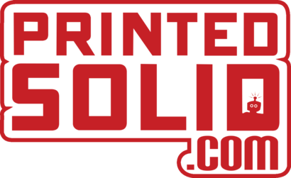
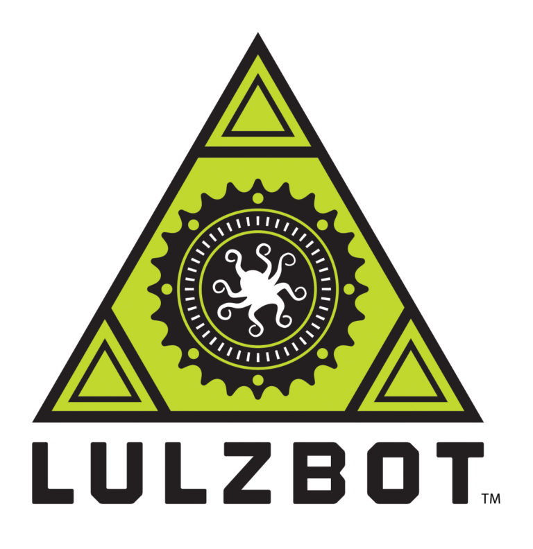
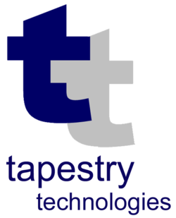

PLATINUM SPONSORS

GOLD SPONSORS
SILVER SPONSORS
 BRONZE SPONSORS
HOST SPONSORS

Presentations and sessions cover all aspects of open source, with talks ranging from novice to expert skill levels and featuring case studies, best practices, code-alongs and more. Join us for a day of meeting with and learning from your technology peers.
Technology is evolving with unprecedented speed, which means it's more important than ever for those on the front lines of tech to gather, converse & share their experiences. CPOSC offers technologists passionate about open source technologies that very opportunity through presentations, panel discussions, lightning talks & more.
As Downtown Lancaster's arts, music, drinking & dining scenes have garnered national recognition over the past decade, we firmly believe that the Lancaster tech scene is in the midst of its own big break out. By moving downtown beginning in 2016, we wanted CPOSC to be at the center of this impending tech explosion. As a bonus: it's an easy walk from the Ware Center to the CPOSC After Party!
Since its start, CPOSC has featured some of the most experienced technologists in the industry presenting on a variety of open source topics, from introductions to emerging technologies to deep dives into coding languages, as well as high-level case studies recounting what worked, what didn't work, and the lessons learned along the way.
Thank you for supporting open source in Central Pennsylvania!
at Millersville University 42 N. Prince Street, Lancaster, PA 17603
111 N. Prince Street, Lancaster, PA 17603
24 E. King Street, Lancaster, PA 17602